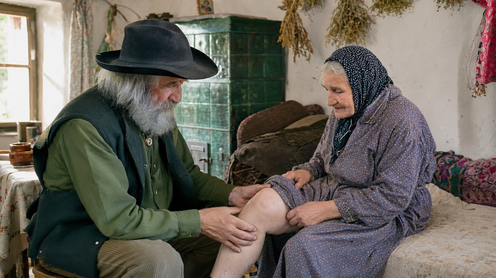

U utorak ujutro stigli smo u Krasno, u doline pod vrhovima. Magla je još visjela među grebenima. Posljednje kilometre prešli smo pješice, jer dalje nema asfalta. „Tražite djeda Antu?" — upitala nas je starija žena na kraju sela, s crnom maramom na glavi. „Skrenite lijevo, pokraj kamene crkvice. Kuća mu je kraj izvora. Ali požurite, oko podneva kreće gore po bilje."
Tako smo našli Antu Vukovića — 75-godišnjeg travara koji je cijeli život proveo na Velebitu i koji danas ruši jedan od najvećih tabua u zemlji: da protiv parazita postoji pravo rješenje. Rješenje koje ne ide preko kemijskih tableta, injekcija ili operacija. Nego preko susreta prirode, starog znanja i pamćenja stoljeća.
U okolnim mjestima — u Krasnom, u Svetom Roku, u Lovincu i drugdje — gotovo svaka obitelj poznaje djeda Antu. Kćeri dovode majke koje kopne pred njihovim očima. Žene naručuju kutije za muževe koji se godinama žale na želudac. Muškarci dolaze nakon dugih dana rada, da si vrate snagu. Obiteljski liječnik u općini priznaje: „Ne mogu objasniti što se događa s tim čovjekom. Ali moji se pacijenti doista oporavljaju."

„Tijelo zna sve. Treba samo utišati buku da čuješ što šapće." Razgovor s djedom Antom u srcu Velebita — u njegovoj kući, gdje po zidovima vise svežnjevi suhog bilja, a na policama leže knjige stare stotinama godina
Djed Ante Vuković: „Pamtim sve kao da je bilo jučer. Rano jutro, magla je još visjela među grebenima. Sjedio sam pred svojom kolibom, kraj vatre, i pripremao biljnu mješavinu — tada sam je radio za svoju stoku. Odjednom sam čuo spore korake. Pojavila se žena, u tamnoj haljini do zemlje, od svojih šezdeset godina. Oči su joj bile kao ustajala voda — pune straha. Sjela je kraj mene na oboreno deblo i rekla:
„Djede Ante, molim te, spasi mi muža. Muž mi gasne. Mršavi iz mjeseca u mjesec, napuhne se nakon svakog jela, noću škripi zubima. Liječnici ne mogu ništa. Svi mu nalazi ispadaju dobri. Nema snage ni sa stolice ustati. Samo leži i plače."
U TOM SAM TRENUTKU SHVATIO: ZNANJE O BILJU KOJE SAM NASLIJEDIO OD SVOG UČITELJA NIJE MI DANO SAMO ZA MENE — NEGO I ZA OVU ŽENU I ZA NJEZINOG MUŽA. TADA SAM ODLUČIO DA GA PRENESEM DALJE."

Djed Ante govori polako, ponekad s dugim stankama — kao da vaga svaku riječ posebno. Njegove velike koščate ruke počivaju na koljenima. Prsti su mu umrljani smolama i korijenjem s kojima radi cijeli život. Iza njega, na zidu, vise suhi svežnjevi pelina i vratiča. Na policama stoje staklenke, male tamne posude i jedna teška knjiga uvezana u kožu — talijanski herbarij star stotinama godina, naslijeđen od njegova učitelja.
„Ljudi misle da su paraziti priča iz djedovih vremena. Laž je to. Pogledaj ovcu koja ima gliste: mršavi iako pase, runo joj postane grubo, nema snage. Svaki pastir zna što joj je i čisti je dvaput godišnje. Ali kad se isto to dogodi čovjeku, nitko ne gleda tamo. Današnja medicina ne traži parazite. Samo uspavljuje znak. I svake godine daje još tableta. Dok se čovjek sasvim ne ugasi."
„Ljekarne ne govore istinu — jer, kad bi je rekle, propale bi" Djed Ante Vuković objašnjava zašto obične tablete protiv parazita čine više štete nego koristi
Djed Ante Vuković:
— Da vam kažem što viđam iz mjeseca u mjesec kod onih koji dolaze k meni. Žena od šezdeset i pet godina. Deset godina pije tablete za želudac. Napuhavanje je svake godine gore. Sada je boli i jetra od tolikih lijekova. Nalazi bubrega su joj loši. Liječnik joj propisuje još jednu tabletu — sada za jetru. Pa onda za bubrege. A paraziti u međuvremenu rade svoje. Njih nitko ne vadi. Samo se uspavljuje znak — dok tijelo ne ostane bez snage.
To je začarani krug: napuhavanje → tableta → znak se vraća jači → jača tableta → želudac trpi → još jedna tableta za želudac → jetra popušta → a paraziti se u međuvremenu množe. Nitko ne govori istinu: postoji drugi put — izvaditi iz tijela ono što nije njegovo, pa ga onda pustiti da se sam oporavi.

Napuhavanje, umor, koža i „živci" nakon četrdeset i pete nisu „normalni za godine" — oni su znak da tijelo hrani nekoga drugog. Tko taj znak uspavljuje tabletama, polako i tiho pušta da mu vlastito tijelo bude pojedeno iznutra.

Obične tablete samo blokiraju znak, dok paraziti tiho rade svoje. Bez pravog čišćenja tijelo se prazni od snage iz godine u godinu — i tada ostaju samo dvije mogućnosti: naviknuti se živjeti tako, ili potražiti drugdje. Nijedna vam sama ne vraća život.
Djed Ante Vuković:
— Shvatite koliko je ozbiljno. Kod mnogih koji dolaze k meni tijelo nosi parazite deset, petnaest godina. Jedu i ne mogu se najesti. Spavaju i ne odmore se. Svaki je dan borba koju ne vide. A tableta iz ljekarne pogodi jednu vrstu, dvije — a ostanu ih još deseci. Čovjek je popije, dva tjedna mu je bolje, onda se sve vrati, pa kaže: „Kakvi paraziti, pa liječio sam se." OBIČNE TABLETE NE MOGU OČISTITI TIJELO — SAMO USPAVLJUJU ZNAK, DOK SE SVE NASTAVLJA!
I znate li što me najviše boli u prsima? To što su ti ljudi sami. Djeca su im otišla u Njemačku, u Irsku, u Austriju, u Englesku. Ljekarna im donosi lijekove jednom tjedno. Liječnik ih vidi jednom godišnje. A oni se u međuvremenu tiho gase. Želudac, koža, san. Izbiju im bradavice na vratu, a kažu im da je to od godina. Nakon nekog vremena boje se i iz kuće izaći. Zato radim to što radim.
Priče koje nikada neću zaboraviti — i priče koje će promijeniti način na koji gledate na snagu prirode
Djed Ante Vuković:
— Dopustite mi da vam kažem koga viđam svaki tjedan. Ne govorim o statistikama. O ljudima. O ljudima s imenima, koji imaju obitelj, koji imaju svoje priče. O ljudima koje je medicina već otpisala — ali koje priroda još nije otpisala.


Evo kako paraziti izgledaju kod čovjeka. To su znakovi koje najčešće viđam — i koje toliki ljudi pripisuju godinama, stresu ili hrani:
- Umor koji ne prolazi — spavaš osam sati i budiš se jednako iscijeđen;
- Napuhavanje, plinovi i težina u želucu nakon jela — „kao da nešto unutra vrije";
- Zatvor i proljev koji se izmjenjuju bez razloga;
- Osipi, svrbež i „alergije" niotkuda — a na vratu i pod pazuhom počinju izbijati bradavice i papilomi;
- Neodoljiva žudnja za slatkim i brašnastim jelima;
- Škripanje zubima u snu i buđenja oko tri ujutro;
- Anemija i manjak željeza koji se ne popravljaju ni tabletama;
- Podočnjaci, blijeda koža, lomljiva kosa i nokti;
- Svrbež u području anusa, osobito noću;
- Razdražljivost, „živci", magla u glavi, slaba koncentracija;
- Česte prehlade i infekcije, jedna za drugom;
Svaki je od tih znakova uzbuna. A nakon četrdeset i pete godine njihovo zanemarivanje vodi prema jednom jedinom kraju: KRONIČNA INTOKSIKACIJA ORGANIZMA, IMUNITET NA NULI, RAZORENA JETRA I CRIJEVA — I TIJELO KOJE IZ GODINE U GODINU NOSI SVE TEŽE.
Svaki dan proveden s parazitima u tijelu približava vas tome! Tisuće hrvatskih umirovljenika gase se upravo zato što su zanemarili znakove — ili zato što su pili samo tablete koje nisu riješile problem. Učinite nešto sada — za sebe ili za svoje bližnje — dok nije prekasno!
„Moj me učitelj naučio: za svaku muku priroda ima odgovor — ako znaš gdje tražiti" Kako je djed Ante Vuković pronašao recept koji danas koristi više od 2000 ljudi iz velebitskih sela
Djed Ante Vuković:
— Sutradan sam otišao vidjeti muža one žene. Kuća je bila u polumraku. Čovjek je izgledao kao osušena gljiva — mršav, žućkast. Tijelo još toplo, a pogled se već opraštao od svijeta. Sjeo sam kraj njega, uzeo ga za ruku i pitao: „Koliko godina već tako živiš, brate?" Šutio je. Niz obraz mu se skotrljala suza. „Devetnaest godina" — prošaptao je. „I nitko ne zna kako da mi pomogne. Svi mi samo pišu recepte."
Tada sam se sjetio jedne stare bilješke. Godinama prije našao sam zaboravljeni svezak među stvarima koje su ostale od mog učitelja — talijanski herbarij iz šesnaestog stoljeća, prijevod „De Materia Medica" velikog Dioskurida. Na jednoj je stranici pisalo: „Onaj koji se potajno hrani u čovjekovim crijevima oduzima mu redom boju, san i snagu, a čovjek misli da su to godine. Samo onaj tko poznaje gorčinu biljke može ga izvući van — i tek tada se tijelo sjeti kako se živi."

Naravno, to nije bilo znanstveno objašnjenje — nego mudrost koja se prenosila s koljena na koljeno. Ali tada sam složio stvari: što je pisalo u knjizi, što mi je ostavio moj učitelj i što sam godinu za godinom gledao vlastitim očima na stoci koju pastiri čiste. Recept je bio ondje, na stranici, samo što ga stotinu godina nitko nije pročitao za ljude. Napravio sam prvu mješavinu za onog čovjeka — i od njega su počele dvije godine rada. Dvije godine u kojima sam vagao biljku po biljku, dok nisam pogodio omjere pri kojima se muka više nije vraćala. To je lijek koji ljudi danas znaju pod imenom Parazol: iste biljke iz knjige, ubrane rukom i stavljene u kutije, bez ijedne kemijske tablete.
Što sadrži lijek koji radi djed Ante:
- Planinski pelin (Artemisia absinthium) — gorčina koja tjera Pelin — najpoznatija ljekovita biljka za izbacivanje parazita iz crijeva. Hrvatska narodna medicina koristi ga stoljećima: njegova gorčina čini da se odrasli paraziti više ne mogu držati za stijenku crijeva
- Vratič (Tanacetum vulgare) — gorka ljekovita biljka Djeluje snažno i na parazite u crijevima i na njihova jajašca — ondje gdje druge biljke ne dopiru
- Klinčići — zbog eugenola u njima Uništavaju jajašca i ličinke — upravo ono što druge biljke ne mogu. Bez tog koraka sve kreće ispočetka nakon nekoliko tjedana
- Kora crnog oraha (Juglans nigra) Čisti crijeva i pomaže tijelu izbaciti sve što se odvojilo — jetra i crijeva rade lakše
- Bučine sjemenke (Cucurbita) Djeluju blago i smiruju sluznicu crijeva — kako je govorio moj učitelj: „biljka koja liječi mjesto nakon što si ga očistio"
To bilje djed Ante i njegovi pomoćnici beru po planinskim padinama šest tjedana — jednom godišnje, samo kad je u punoj snazi. Omjere je usvojio od svog učitelja, a svaki korak radi vlastitim rukama.
Tako se rodio Parazol — rađen rukom, od najboljeg ljekovitog bilja s Velebita
Djed Ante Vuković:
— Ne rađa se u laboratoriju. Rađa se u mojoj radionici, ovdje, u podnožju planine. Pelin i vratič beremo ja i moji pomoćnici — gore, na sunčanim padinama, gdje biljka ima najviše snage. Ostalo bilje skupljamo isto ovdje, po strminama. Berba nam oduzme šest tjedana, jer svaku biljku treba odrezati točno onog dana kad je dozrela. Zatim radimo lijek u malim količinama i stavljamo ga u kutije rukom. U jednom danu možemo napraviti najviše 70 kutija — ne više, jer bi inače kvaliteta stradala.


U temelju lijeka stoji recept star četiristo godina, ostavljen od mog učitelja. Današnjim jezikom: koncentrirane biljke stižu onamo gdje paraziti zapravo žive — u stijenku crijeva, u jetru i u žučne vodove —, dakle točno na mjesto koje obična tableta jedva usput dotakne. Djelovanje je pet puta jače od bilo koje mješavine s police, jer priroda točno zna kako raditi s ljudskim tijelom. A prednost pred tabletama je što radi cijelim putem hrane odjednom — želudac, crijeva, jetra, žuč — bez jake kemije koja bi udarila po jetri i bubrezima. Za starije ljude koji žive sami to znači mir i nikakvu dodatnu brigu.
Parazol se ne želi ni s kim natjecati. Želi samo pomoći. Svaka biljka — u svom točnom omjeru — radi jednu jedinu stvar: jedna tjera odrasle parazite, druga uništava njihova jajašca, treća čisti tijelo od onoga što je ostalo, četvrta smiruje crijevo. Tek sve četiri zajedno čine da se problem više ne vrati. I najvažnije: djeluje i sa 70, i sa 80, i sa 85 godina! Moji prvi bolesnici bili su najstariji — ljudi koje su već svi otpisali.
Djed Ante Vuković:
— Prva žena kojoj sam dao ovaj lijek nije ustajala iz kreveta četiri mjeseca. Bila je to teta Manda iz Svetog Roka. Trećeg je dana sama ušla u kuhinju i skuhala mi kavu — ne zato što bi za tri dana ozdravila, nego zato što joj je prošla težina u trbuhu i prospavala je cijelu noć. Ostalo je došlo polako, tjedan za tjednom. Oboje smo plakali. Ona — jer joj prvi put nakon mnogo godina nije bilo zlo nakon svakog zalogaja. Ja — jer sam u tom trenutku shvatio da nasljeđe mog učitelja živi. Da nisam uzalud radio sve te godine.
Na četiri načina Parazol vam pomaže očistiti tijelo i vratiti snagu — u bilo kojoj dobi
Odrasli parazit, jajašca koja ostavlja za sobom i otrovi u iscijeđenom tijelu tri su različite stvari — zato jedna tableta ne može izvaditi sve odjednom. Četiri posla lijeka Parazol:
- Tjeranje odraslih parazita Već od prvih dana kure pelin i vratič čine da se odrasli paraziti više ne mogu držati za stijenku crijeva, i tijelo ih izbacuje van prirodnim putem. Ne uspavljuje se znak (kao što rade obične tablete za želudac) — vadi se uzrok.
- Uništavanje jajašaca i ličinki Ovdje padaju gotovo sve kure: odrasli paraziti odu, ali jajašca ostanu, pa nakon nekoliko tjedana sve kreće ispočetka. Eugenol iz klinčića stiže i do jajašaca i do ličinki. Taj se korak događa 7.-10. dana kure.
- Čišćenje tijela od otrova Kora crnog oraha i bučine sjemenke pomažu jetri i crijevima izbaciti van sve što je ostalo. Zato se u drugom i trećem tjednu smiruju svrbež i osipi na koži, diže se magla iz glave i počinje se vraćati snaga.
- Obnova crijeva i snage Kura traje četiri tjedna i mora se odraditi do kraja. Prve se promjene osjete brzo — za dva-tri dana prođe napuhavanje i spava se drugačije. Ali pravi rezultat dolazi postupno: tek pred kraj kure sluznica crijeva se smiri i hrana počne opet hraniti tijelo, a ne nekoga drugog. Tada se vraćaju miran san, boja lica i volja za životom. Jedna je kura dovoljna. Samo kod muka starih deset-petnaest godina treba još jedna.
Priče koje djed Ante sam pripovijeda — o ljudima koji su opet stali na noge
Djed Ante Vuković:
— Dopustite mi da vam ispričam o nekolicini onih koje viđam svaki tjedan. Ljudi kojima nitko više nije davao nikakvu šansu — ni liječnici ni obitelj. Ljudi koji danas opet žive.

Teta Manda, 82 godine, Sveti Rok. Četiri mjeseca nije ustajala iz kreveta. Prvih dana s Parazolom prošlo joj je napuhavanje i prospavala je cijelu noć; trećeg je dana sama napravila nekoliko koraka po kući. Snaga se vraćala polako, a na kraju četverotjedne kure izlazi u dvorište bez ičije pomoći. „Nitko to nije očekivao. Ni ja sama. Djed Ante dolazi jednom tjedno. Samo me pogleda, pita kako sam spavala i kimne."
Rezultat nakon 30 dana: Hoda sama, nestalo je napuhavanje, spava cijelu noć i jede bez straha.
Djed Stipe, 70 godina, umirovljeni šumar iz Otočca. Napuhavanje, „gastritis", nadraženo crijevo — nije mogao sjesti za stol sa svojima a da se ne napuhne. Muka je bila stara trideset godina, pa je odradio i drugu kuru nakon prve. Za mjesec i pol vratio se u svoj vrt i obrađuje po dvije gredice na dan. „Mislio sam da mi je želudac zauvijek pokvaren. Bio sam se spreman pomiriti. Prevario sam se. S biljem djeda Ante osjećam se dvadeset godina mlađi."
Rezultat nakon 45 dana: Nestala je težina u želucu, vratio se apetit, a prvi put nakon mnogo godina spava duboko cijelu noć.Zašto Parazola nema u ljekarnama? I kako se može naručiti?
Djed Ante Vuković:
Iskreno, izrada Parazola je težak i spor posao. Bilje je rijetko — planinski pelin bere se samo gore, na sunčanim padinama, ostalo rukom, po strminama, a imamo prozor od samo šest tjedana godišnje, kad je bilje u punoj snazi. U jednom danu možemo napraviti najviše 70 kutija u mojoj radionici. Ne možemo udovoljiti svima.
Proći će još najmanje 2-3 godine dok Parazol stigne u ljekarne. Do tada se u cijeloj zemlji nalazi samo preko interneta, u programima potpore koji se otvaraju dvaput godišnje. Popust može doseći i 50% — što je jako važno za hrvatske umirovljenike na selu, koji žive s mirovinom od oko 450 eura mjesečno.
Kad su ljekarne saznale da ovaj lijek doista radi — čak i kod ljudi koji su muku nosili deset-petnaest godina — htjele su tražiti 196 eura po kutiji. Rekao sam im: „Ne radim za novac. Moj mi je učitelj besplatno dao sve što je znao. Neću pljačkati hrvatske umirovljenike." Ljekarne su me odbile. Nekoliko dana kasnije počeli su mi dolaziti ljudi iz zdravstvene inspekcije. Tražili su papire. Htjeli su me kazniti. Ali nisam stao. Tada se u mom životu pojavio jedan mladić iz Zagreba. Njegovu sam majku tri godine ranije očistio od stare želučane muke koju nitko nije mogao razriješiti — ja sam davno bio zaboravio i njega i nju. Sada se vratio. Rekao mi je: „Djede Ante, vi ovdje u planini radite čuda svojim rukama. Ali u Hrvatskoj ima tisuće ljudi koji pate i koji nikada neće doći dovde. Dopustite mi da pomognem." On je učinio da se lijek pripremljen mojim alatom stavlja u čiste kutije, u čistoj radionici, da ga kurirska služba raznosi po cijeloj zemlji, a mali tim odgovara na telefone. Ja i dalje radim lijek ovdje, svojim tempom. On se brine samo da stigne do onih kojima treba.
Molim vas: NE PROPUSTITE OVAJ PROGRAM! Ne samo zbog sebe — nego i zbog roditelja, zbog djedova i baka, zbog bliske rodbine koja možda pati u tišini. Ili zbog onih koji su već u domu za starije, sami, i kojima nitko ništa ne šalje. Budite vi onaj tko čini razliku.
Za narudžbu koristite obrazac ispod.
Posljednja prilika da nabavite Parazol ove godine — za sebe ili za nekoga dragog tko pati u tišini

Djed Ante Vuković:
— Odvojio sam 20 000 kutija, skupljanih seriju po seriju tijekom cijele godine, samo za čitatelje ovog portala. Svaki hrvatski građanin stariji od 40 godina može dobiti popust od 50%, ali program završava .
Ne čekajte dok više ne budete mogli ništa pojesti a da se ne napuhnete. Dok vam noću koža ne počne gorjeti tako da ne možete spavati. Dok nemate snage izaći iz kuće. I ponajviše — ne čekajte dok ne postanete „teret" svojim bližnjima. Jedna kura izvadi iz tijela ono što nije njegovo — i od tog trenutka tijelo dalje samo radi svoj posao. Bez doživotnog liječenja, bez kemijskih tableta, bez muke koja se vraća. Jedan korak, i vaše će se tijelo sjetiti kako se živi.
Upišite svoje ime i broj telefona. Konzultant će vas nazvati, odabrati odgovarajući program i organizirati dostavu za 2-3 dana kurirskom službom, ravno na vašu adresu, bilo gdje u Hrvatskoj.
S ljubavlju i brigom — djed Ante Vuković. Čuvajte svoje bližnje. Možda je jedino što im treba to da znaju da nisu zaboravljeni.
Ažurirano: : S obzirom na golem interes, zalihe se mogu potrošiti brže nego što je predviđeno! Danas — — je posljednji dan programa ili do isteka zaliha.
Pozor! Ne zatvarajte i ne osvježavajte stranicu, inače će vaša kutija Parazola biti ponuđena drugoj osobi!
Možete sudjelovati u ponudi — vaše je mjesto rezervirano: Nº 19 974
ravno na adresu koju navedete

KOMENTARI
Biserka Kovač
Prije 2 sata
Plakala sam čitajući ovo. Mama ima 76 godina, već dvije godine je u domu u Gospiću — upravo zato što je smršavila toliko da više nije mogla sama po kući. Svi su liječnici govorili da je to od godina. To mi je najveća krivnja. Naručila sam Parazol za nju. Nadam se da nije prekasno. Dao Bog da djeluje.
Vesna Novak
Prije 5 sati
Prošli petak sam dobila Parazol. Uzimam ga ujutro i navečer, kako piše na kutiji. Za 5 dana — napuhavanje je puno popustilo, mogu pojesti juhu a da se ne napušem kao bačva! Priča o djedu Anti uvjerila me da naručim. Izniman čovjek, doista.
Snježana Perić
Prije 8 sati
Imam 69 godina. Četiri godine sam se mučila sa želucem — „gastritis", „nadraženo crijevo", kako su ga već htjeli nazvati. Liječnici su mi dali tablete koje su mi želudac pokvarile još više. Nakon 3 tjedna s Parazolom — težina je gotovo nestala. Idem sama na tržnicu, kuham. Vratila sam si život, hvala Bogu.
Goran Tomić
Prije 12 sati
Radim 10 sati dnevno u uredu u Zagrebu. Dvije godine sam bio slomljen od umora i izbio mi je osip po cijelom tijelu. Liječnik mi je rekao: „Od stresa je, pijte vitamine." Na kraju kure — ni traga. I veliko poštovanje prema djedu Anti — u svijetu u kojem svi žele novac, on pješači do zaboravljenih staraca u planini.
Ljiljana Ivanković
Prije 14 sati
Iskreno, nisam vjerovala. Toliko se toga reklamira na internetu da sam izgubila povjerenje. Pročitala sam ovaj članak samo zato što svekrva više nije mogla ništa pojesti, a ja sam bila očajna. Naručila sam misleći „ako ne djeluje, gubim 49 eura". Prošla su 3 tjedna. Jučer je svekrva jela za stolom s nama, kao čovjek! Svekrva moja! Koja je 8 mjeseci kljucala po dvije žlice pa ustajala od stola. Sad ne znam što da kažem. Pišem zbog onih koji kao i ja sumnjaju.
Damir Matić
Prije 16 sati
Naručio sam 3 kutije — za sebe, za ženu i za punca koji je u domu. Ne možemo ga često posjećivati, barem da mu šaljemo ono što mu treba. Nadam se da će i njemu djelovati. Hvala na ovom članku.
Danijela Rukavina
Prije 18 sati
Stalno se pitam da naručim za tatu. Već 3 godine je u domu — jako je smršavio i gotovo ništa više ne jede. Ništa ga ne zanima, jedva govori. Mislite li da Parazol može pomoći i sa 78 godina?
Gordana Jurić
Prije 17 sati
Danijela, moja mama ima 82 godine! Godinama nije mogla ništa pojesti a da se ne napuhne, ostala je kost i koža, nije ustajala iz kreveta. Odradila je četverotjednu kuru, a sada, nakon dva mjeseca, sama izlazi u dvorište. Ne pretjerujem. I ono najljepše: kad sam je posjetila, čekala me stojeći na vratima! Plakale smo zajedno. Naruči bez razmišljanja, tvoj tata zaslužuje priliku.
Ivan Šimunić
Prije 15 sati
Danijela, naruči mirno. Imam 78 godina i bio sam na korak da više ne ustanem iz fotelje — iscrpili su me napuhan trbuh i neprospavane noći. Muku sam nosio godinama, pa sam odradio dvije kure jednu za drugom. Parazol me digao na noge. Doslovno. Tvoj tata zaslužuje više od doma.
Vlatka Babić
Prije 20 sati
Tjedan dana uzimam lijek. Ujutro se više ne budim kao prebijena. Jedem i ne napuhnem se, a svrbež po rukama je prošao. Papilomi na vratu, koje imam već tri godine i za koje mi je liječnik rekao „to je od godina", kao da su se smanjili — čekam da završim kuru pa ću vam javiti. Naručila sam i za susjedu, ima 73 godine i živi sama.
Suzana Vlašić
Prije 1 dan
Priznajem — čitala sam ovaj članak s nepovjerenjem. Imam iskustva s proizvodima koji obećavaju sve. Ali priča o djedu Anti me osvojila i odlučila sam probati, jer me želudac mučio već 5 godina. Nakon mjesec dana — mogu kopati po vrtu! Ne kažem da je čudo. Kažem da djeluje. Dajte mu priliku.
Stanka Tomljenović
Prije 1 dan
Imam 82 godine. Prošle godine nisam imala snage ni do kuhinje doći. Djeca su govorila da me smjeste u dom. Probala sam Parazol — bez velikih nada. I DJELUJE!!! Jedem, spavam, oblačim se sama, sama dođem do dvorišnih vrata. Djeca više ne spominju dom. To mi je najveća radost.
Nikola Pavičić
Prije 1 dan
Žena mi je kopnjela iz mjeseca u mjesec — mršavila je, nije spavala, škripala je zubima cijelu noć. Mislio sam da je gubim — ne od neke bolesti, nego od iscrpljenosti. Naručio sam Parazol s popustom. Nakon 4 tjedna — jučer je sama otišla na tržnicu i vratila se s cvijećem. S cvijećem! Hvala od srca.
Jasminka Perković
Prije 1 dan
Naručila sam četiri kutije — za mamu (u domu), za tatu (isto tamo) i dvije za sebe i za sina, jer oboje imamo iste muke sa želucem. Priče iz članka su me dirnule. Više nemam isprike.
Slavica Jurković
Prije 2 dana
Dobila sam Parazol — kurir ga je dostavio za 2 dana! Već sam odnijela kutiju mami, u dom. Imam nadu u srcu. Šaljem ovaj članak i osoblju ondje — možda nazovu djeda Antu.
Igor Lazarić
Prije 2 dana
Tražio sam Parazol po ljekarnama — nitko ga nema. Rekli su mi da se mora naručiti s ove stranice. Nadam se da ga još ima. Djedu hitno treba — ima 81 godinu i gotovo ništa više ne jede.